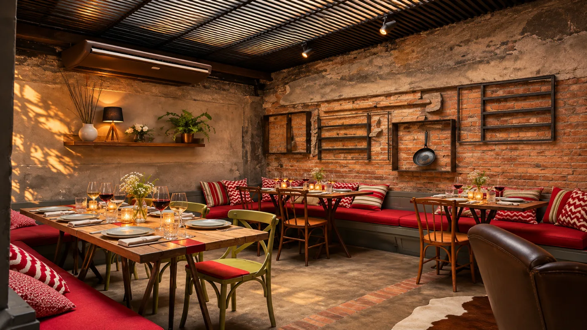
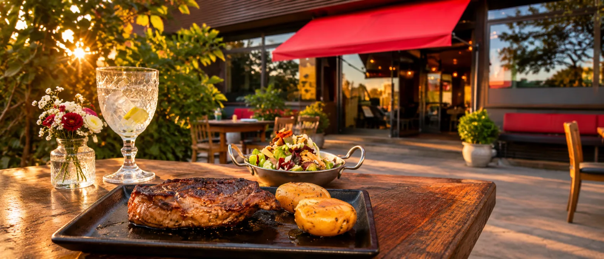

Cortes na brasa, drinks e encontros na esquina mais charmosa de Porto Alegre. A parrilla acesa desde o almoço até a última taça.

O Fierro 7 traz a cara do Uruguai para a Rua Comendador Caminha, de frente para o Parcão. Tijolo aparente, ferro e almofadas vermelhas: um salão pensado para a mesa longa e sem pressa.
Na parrilla, os cortes vão para a grelha no ponto que você pedir. No copo, drinks autorais e vinhos platinos para acompanhar.
O corte nobre que vai inteiro à grelha de ferro e chega à mesa no ponto.
O queridinho das avaliações: macio, recheado e assado lentamente na brasa.
Cozimento longo, sabor profundo, para quem gosta de tempo na panela.
Seleção de cortes do dia na parrilla, com acompanhamentos clássicos.
Para dividir na mesa enquanto a parrilla trabalha.
Pergunte ao garçom pelas sugestões da casa para abrir a noite.
A sobremesa uruguaia por excelência.
Carta de drinks e vinhos selecionados de Mendoza e do Uruguai.

Noites com vinícolas convidadas, menu especial e o fogo aceso. Fique sabendo da próxima data.
Diferentes ambientes para diferentes ocasiões, da mesa longa ao salão reservado.
Almoços de negócios e encontros de equipe com cardápio sob medida.
“Carne excelente, no ponto exato. Adoramos!”
Avaliação no Google“O matambre recheado é nota 10, no mínimo. Atendimento excepcional.”
Avaliação no Google“Nosso restaurante número 1 em Porto Alegre.”
Avaliação no GoogleMoinhos de Vento, Porto Alegre — em frente ao Parcão.